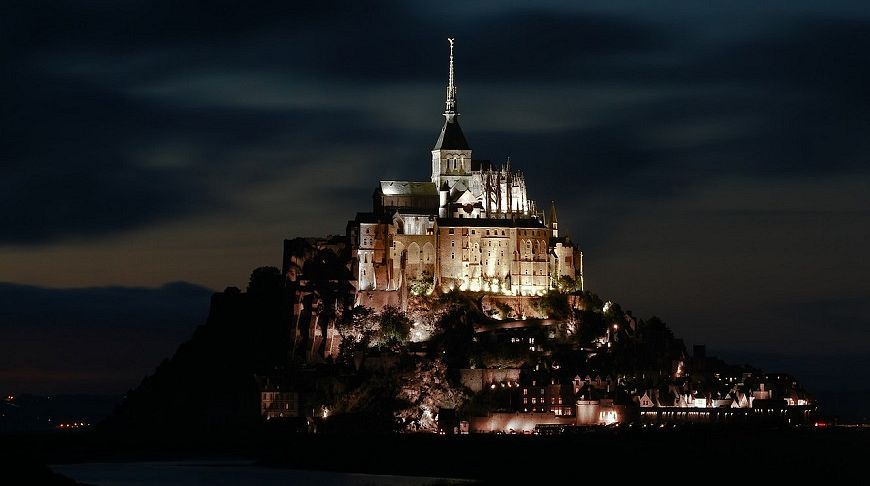
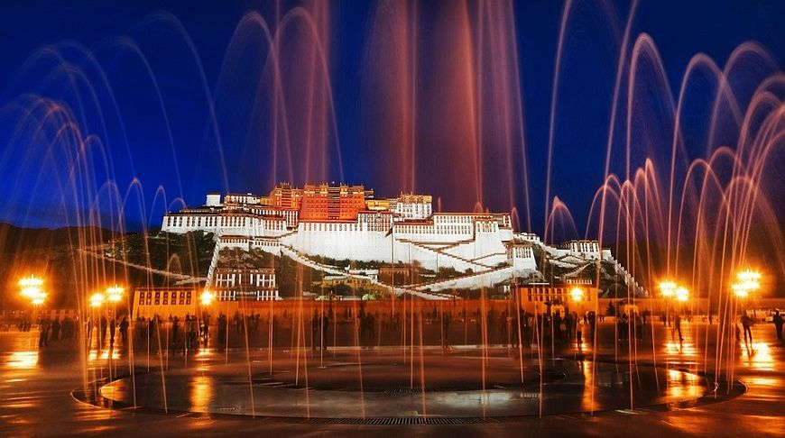
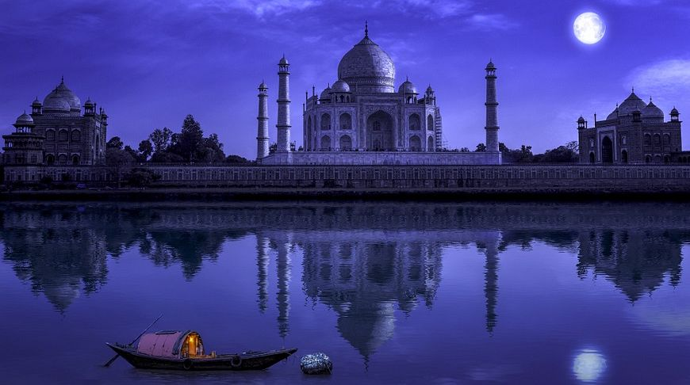

Коли туристи оглядають знамениті міста та знакові пам'ятки? Зазвичай вдень, адже при світлі сонця і фотографії краще знімати, відео записувати, розглядати вишукані архітектурні деталі, і слухати розповідь гіда, оглядаючи околиці. І все ж таки є пам'ятки, які варто побачити вночі!
Мон-Сен-Мішель, Нормандія, Франція

Розташоване на скелястому французькому острівці в оточенні піщаних мілин, готичне бенедиктинське абатство влаштувалося майже посередині між Нормандією та Бретанню. Берег схильний до потужних припливів, так що потрібно точно розрахувати час візиту. Ідіть у сутінках до монастиря і спостерігайте за тим, як сонце укладається спати в тихі води. Засвітяться вогні, і ви зробите крок у бік набережної, щоб отримати магічні знімки.
Палац Потала, Лхаса, автономний район Тибету Китаю

Оточена горами Тибету, колишня офіційна резиденція Далай-лами та один з найбільших на планеті палаців - це приголомшливе видовище вночі, коли спалахує підсвічування. Палац Потала в Лхасі недаремно включений до списку Всесвітньої спадщини ЮНЕСКО і залишається місцем паломництва буддистів Тибету. З ресторану на даху готелю Shambhala, що причаївся в центрі старого міста, можна насолоджуватися прекрасним нічним видом на комплекс.
Тадж-Махал, Агра, Індія

Ніхто на світі не освідчувався дружині так, як це зробив Шах Джахан, коли будував для красуні розкішний і вишуканий мавзолей Тадж-Махал. Це справжній скарб індійського міста Агри, поезія, відбита у камені. Місячне світло надає ансамблю неповторного досконалого сяйва. Територія Тадж-Махала відкрита для нічних турів у повний місяць і кілька ночей після нього. В інших випадках милуйтеся індійською казкою з ресторану на даху готелю Sai Palace